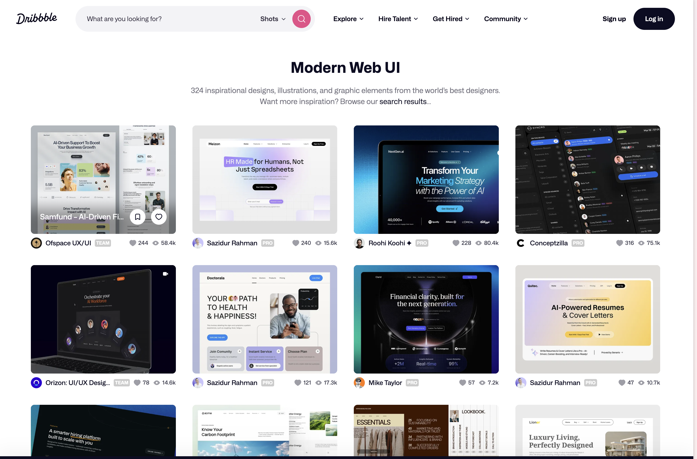
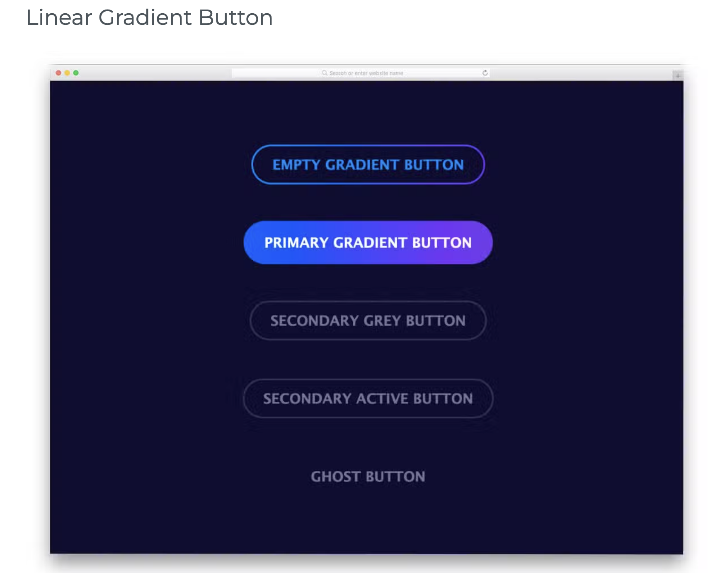

The Power of Visual Design
I've been learning about how visual design makes websites more engaging and easier to use. CSS effects like shadows, gradients, and borders are useful for organizing content and showing what's interactive. From what I've seen, adding a subtle shadow to a button makes it look way more clickable compared to just a flat shape. These small touches can really improve how polished a website feels.

That said, I've noticed it's easy to overdo these effects. Too many shadows and complex gradients can slow down a page, especially on mobile devices or older computers. Some websites I've visited feel laggy when scrolling because there's just too much going on visually. I think the goal should be using effects where they actually improve the user experience rather than just adding them for decoration.
CSS Effects in Action

Key Visual Techniques
I've noticed that a lot of modern websites use rounded corners to look softer and more approachable, shadows to create depth, and gradients to add visual interest. What I like about CSS3 is that I can create all these effects without loading heavy image files, which keeps the site running fast.